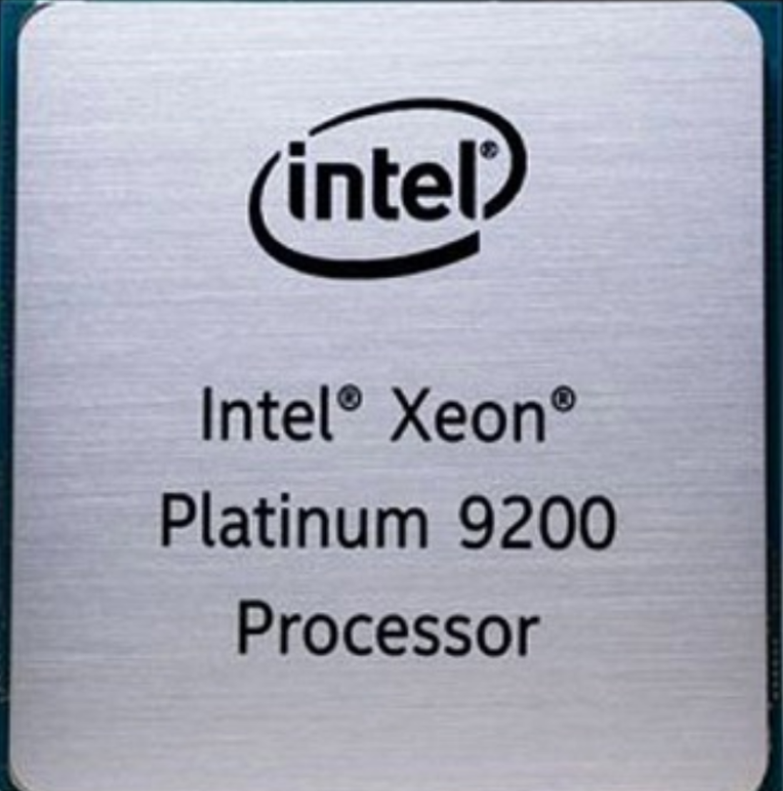

Intel acaba de anunciar una bestia de procesador de 56 núcleos
Hace casi tres meses que Intel lazo su Intel Xeon W-3175X un procesador de 28 núcleos y 56 hilos que, hasta ahora, era el chip más potente de la compañía No obstante, la compañia acaba de anunciar el nuevo Xeon Platinum 900, que sube hasta los 56 nucleos y 112 hilos de procesamiento para machacar cargas de trabajo Por si estas cifras no lo dejan bastante claro, quede claro que tratándose de un Xeon la cosa está pensada para servidores y centros de datos, no para equipos caseros o jugadores.
El Xeon Platinium 9200 pertenece a la familia Cascade Lake Esto no quiere decir que la compañía vaya a sacar un “56 núcleos” al mercado de consumo. No obstante, se espera que el Cascade Lake-X supere los 18 núcleos y 36 hilos del Intel Core i9-9980XE Extreme Edition que se encuentra en la cima del mercado de procesadores para entusiastas.
Este procesador tendrá una frecuencia base de 2.6GHz y en modo Boost llegara a los 3.8GHz. Se acompaña este procesador con 77MB de caché L3 y la contrapartida es que tendrá un TDP de 400W.